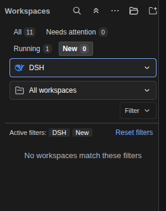
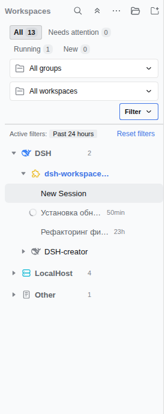
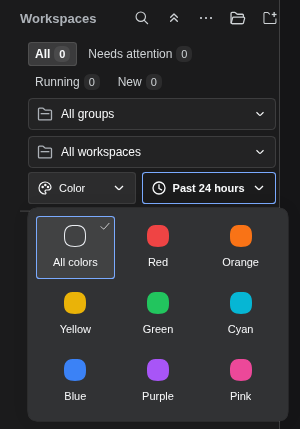
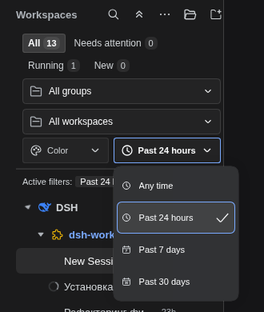
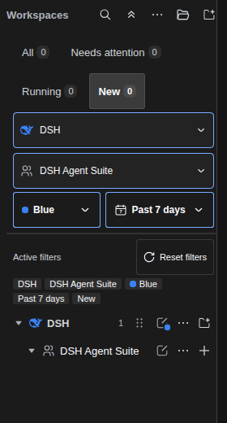
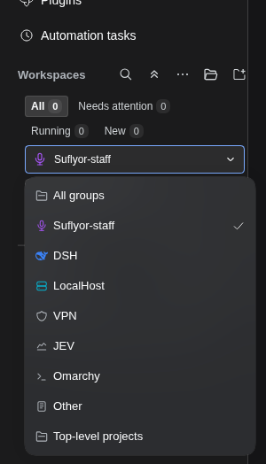
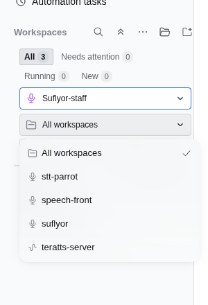

Verified screenshots from the running application, not a standalone UI imitation. Equal-width scope controls, separate tools row, one reset action and clear empty-filter state. Host typography and semantic theme colors remain unchanged.


Independent controls keep current selections visible. Labelled palette and clock/calendar artwork, native Menu focus and dismissal.


One icon-labelled reset in the summary header; chips wrap below. Reset clears filter conditions, preserves search text and restores focus to All. Group and workspace popups are wider with touch-friendly rows.


